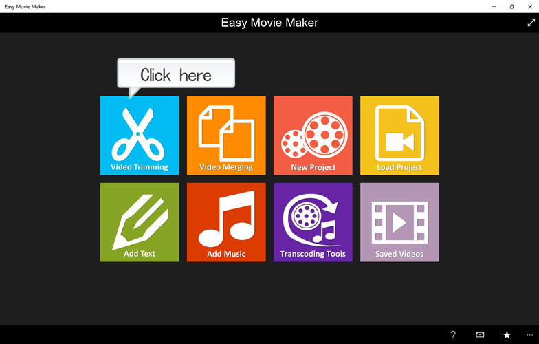
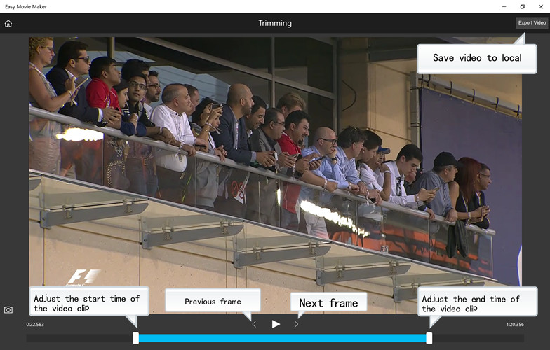

Click "Video Trimming" on the main page, and then choose a video file.

In the "Trimming" page, adjust the start and end time of the trimmed video by moving the white button on both sides of the blue area at the bottom. Click "<" or ">" for the previous or next frame. Click "Export Video" to save video.
